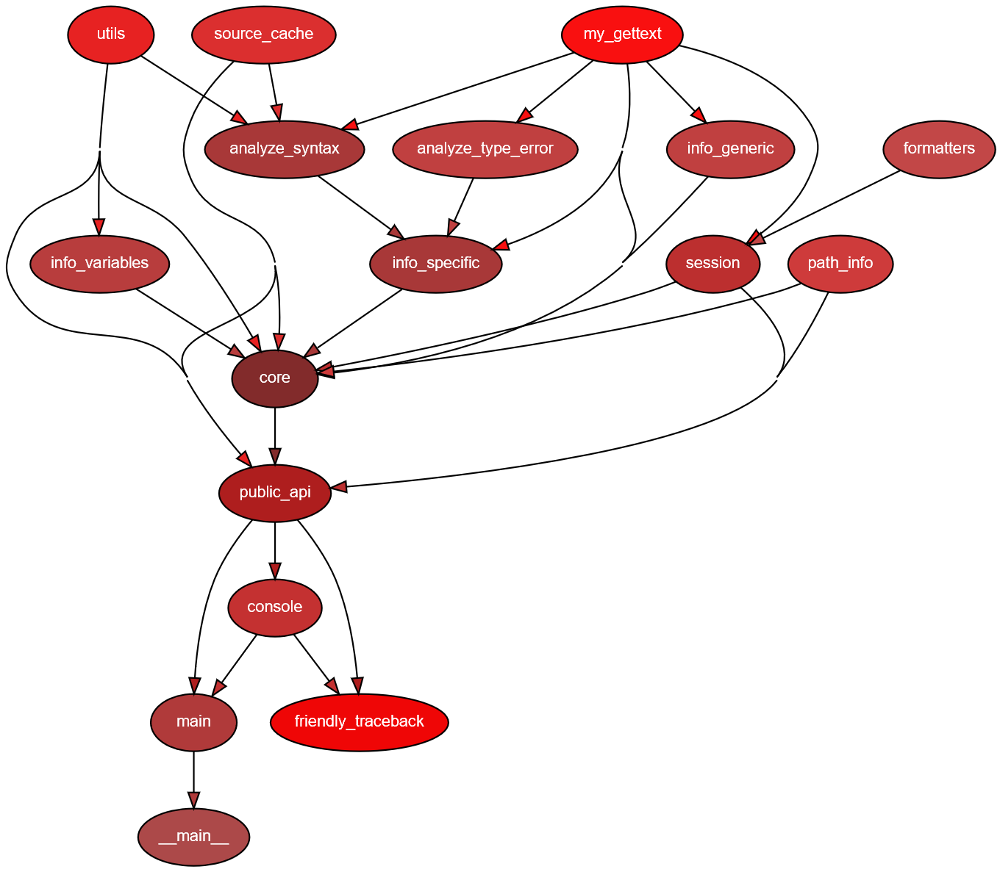

Friendly tracebacks
0.0.19a
Usage
Occasional lies
Design
Public API
Custom exceptions and formatting
Suggest an addition
Adding an Exception
Dealing with Syntax Errors
Friendly tracebacks - Python 3.6 in English
SyntaxError - Python 3.6 in English
Friendly tracebacks - Python 3.7 in English
SyntaxError - Python 3.7 in English
Friendly tracebacks - Python 3.8 in English
SyntaxError - Python 3.8 in English
Friendly tracebacks - Python 3.7 en Français
SyntaxError - Python 3.7 en Français
Notes on translations - using gettext
Project files
Comparison between versions
Change Log
Friendly tracebacks
Docs
»
Project files
View page source
Next
Previous
Project files
¶
The following graph was created by
pydeps
, a project I discovered recently and find very useful.
